V. Les Cordes
Plage formantique : 172–1 518 Hz (voyelles /u/ → /e/).
La famille des cordes présente la plus grande variabilité spectrale de l'orchestre,
compensée par la mesure Fp (centroïde).
Découverte clé : le violon (F1=506 Hz) et le basson (F1=495 Hz)
convergent à Δ=11 Hz dans la zone /o/. Le violoncelle (F1=205 Hz, zone /u/) rejoint
cette zone via son Fp (~600 Hz). L'effet de section : F1 quasi-stable (violon solo=506,
ensemble=495, Δ=−2 %), mais F2 s'aplatit de −23 % — effet de section spectral clairement quantifié.
Cordes solistes
Violon
ViolonCluster /o/
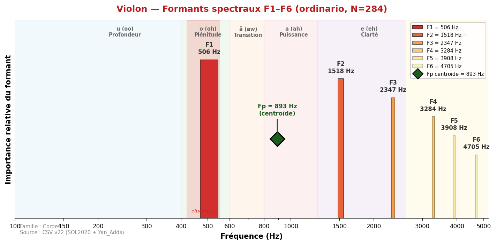
Son brillant et expressif, extrêmement large tessiture spectrale.
F1 spectral strict = 506 Hz (zone /o/) mais très variable (σ=235 Hz).
F2 extrêmement instable (σ=651 Hz). Le Fp centroïde à 893 Hz (σ=92 Hz)
est 7.1× plus stable et correspond au Hauptformant de Meyer (800–1 200 Hz, zone /a/).
Sources divergentes : Backus (2 000–3 000) capturait une zone de brillance haute ; Giesler
et Meyer convergent sur 1 000–1 200 Hz. SOL2020 Fp=893 Hz confirme la zone /a/ comme
signature timbrale perceptive du violon.
◆ Fp (centroïde) = 893 Hz
Valeurs de référence (sources académiques)
| Backus (1969) | ~2 000–3 000 | — | — | — | — | — | — |
| Giesler (1985) | 1 000–1 200 | ~2 400 | — | — | e-ähnlich | — | ~ |
| Meyer (2009) | ~800–1 200 (Hauptformant) | ~2 800–3 400 | — | — | e (eh) | — | ~ |
| SOL2020 | 506 ±235 | 1 518 ±651 | 2 532 | 3 478 | (variable) | 41 | — |
| SOL2020 Fp | 893 ±92 (Fp) | — | — | — | a (ah) | 284 | ~ |
Analyse spectrale complète
| artificial_harmonic | 49 | 377 | 894 | 1 626 | 2 379 | 3 488 | 4 242 |
| artificial_harmonic_tremolo | 46 | 366 | 926 | 1 981 | 2 476 | 3 542 | 4 274 |
| behind_the_bridge | 7 | 538 | 1 152 | 2 240 | 3 068 | 3 381 | 5 050 |
| behind_the_fingerboard | 1 | 484 | 872 | 1 120 | 1 766 | 3 618 | 5 243 |
| chromatic_scale | 2 | 528 | 904 | 1 529 | 1 916 | 2 261 | 3 747 |
| col_legno_battuto | 63 | 398 | 883 | 1 518 | 2 132 | 2 928 | 4 027 |
| col_legno_tratto | 61 | 377 | 818 | 1 357 | 2 110 | 2 627 | 4 005 |
| crescendo | 44 | 592 | 1 432 | 2 369 | 3 133 | 3 930 | 4 716 |
| crescendo_to_decrescendo | 60 | 420 | 1 023 | 2 218 | 2 810 | 3 833 | 4 576 |
| crushed_to_ordinario | 54 | 366 | 829 | 1 873 | 2 347 | 3 456 | 4 220 |
| decrescendo | 40 | 517 | 1 497 | 2 358 | 3 413 | 4 059 | 4 931 |
| hit_on_body | 4 | 398 | 851 | 1 335 | 1 744 | 1 464 | 1 776 |
| natural_harmonics_glissandi | 24 | 1 550 | 2 003 | 2 541 | 3 036 | 3 402 | 4 242 |
| non_vibrato | 249 | 409 | 990 | 2 229 | 3 079 | 3 898 | 4 436 |
| note_lasting | 57 | 517 | 1 324 | 2 229 | 2 961 | 3 833 | 4 425 |
| on_the_tailpiece | 1 | 366 | 711 | 1 303 | 1 776 | 3 833 | 5 631 |
| on_the_tuning_pegs | 4 | 431 | 861 | 1 335 | 1 658 | 1 970 | 3 585 |
| ordinario | 284 | 506 | 1 518 | 2 347 | 3 284 | 3 908 | 4 705 |
| ordinario_to_crushed | 58 | 355 | 808 | 1 507 | 2 369 | 3 499 | 4 210 |
| ordinario_to_sul_ponticello | 43 | 388 | 894 | 2 078 | 2 799 | 3 714 | 4 414 |
| ordinario_to_sul_tasto | 55 | 441 | 1 066 | 2 229 | 2 756 | 3 768 | 4 468 |
| ordinario_to_tremolo | 46 | 420 | 1 174 | 2 164 | 2 950 | 3 725 | 4 684 |
| pizzicato_bartok | 53 | 431 | 851 | 1 400 | 2 100 | 3 198 | 4 253 |
| pizzicato_l_vib | 243 | 409 | 851 | 1 270 | 1 787 | 2 498 | 3 542 |
| pizzicato_secco | 189 | 388 | 764 | 1 195 | 1 776 | 2 390 | 3 456 |
| sforzato | 100 | 452 | 1 174 | 2 218 | 2 907 | 4 038 | 4 737 |
| staccato | 60 | 474 | 1 098 | 2 207 | 3 122 | 3 919 | 4 565 |
| sul_ponticello | 58 | 388 | 937 | 2 196 | 2 939 | 3 833 | 4 360 |
| sul_ponticello_to_ordinario | 46 | 409 | 1 001 | 2 347 | 2 961 | 3 801 | 4 447 |
| sul_ponticello_to_sul_tasto | 37 | 377 | 926 | 2 100 | 2 810 | 3 736 | 4 479 |
| sul_ponticello_tremolo | 58 | 603 | 1 572 | 2 358 | 2 950 | 3 801 | 4 371 |
| sul_tasto | 50 | 517 | 1 012 | 2 164 | 2 616 | 3 510 | 4 242 |
| sul_tasto_to_ordinario | 52 | 431 | 1 120 | 2 110 | 2 832 | 3 854 | 4 468 |
| sul_tasto_to_sul_ponticello | 52 | 398 | 948 | 2 196 | 2 778 | 3 801 | 4 436 |
| tremolo | 285 | 495 | 1 163 | 2 100 | 2 928 | 3 747 | 4 404 |
| tremolo_to_ordinario | 41 | 495 | 1 389 | 2 293 | 3 122 | 3 876 | 4 651 |
| trill_major_second_up | 61 | 528 | 1 120 | 2 186 | 2 487 | 3 682 | 4 296 |
| trill_minor_second_up | 63 | 484 | 1 270 | 2 143 | 2 649 | 3 585 | 4 274 |
Doublures recommandées
| Hautbois | 893 (Fp) | 1 460 (Fp) | Δ=567 Hz | Complémentaire | Unisson | Doublure Fp : Violon Fp=893, Hautbois Fp=1460 — zone /a/–/e/ partagée |
| Flûte | 893 (Fp) | 1 354 (Fp) | Δ=461 Hz | Complémentaire | Unisson | Doublure Fp : Violon Fp=893, Flûte Fp=1354 — enrichissement aigu |
| Clarinette Sib | 893 (Fp) | 1 016 (Fp) | Δ=123 Hz | Bonne | Unisson | Doublure Fp : Violon Fp=893, Cl.Sib Fp=1016 — zone /a/ commune |
| Trompette | 893 (Fp) | 1 046 (Fp) | Δ=153 Hz | Bonne | Octave | Trompette sonne généralement une octave au-dessus |
Violon+sourdine
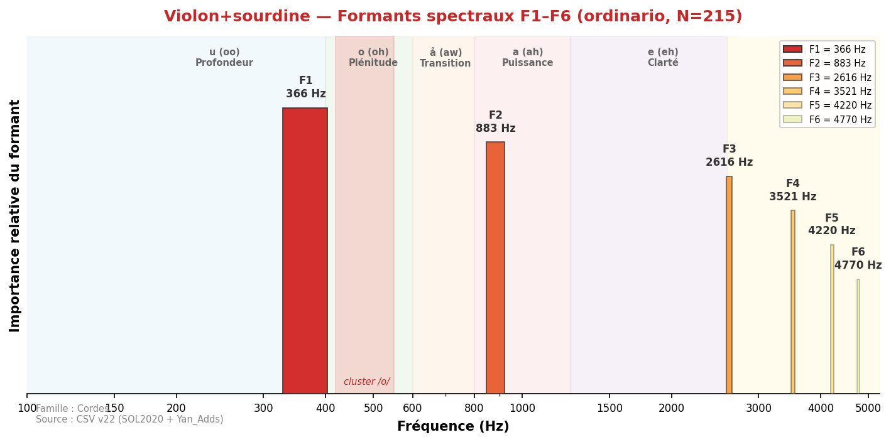
Son plus doux, atténuation des harmoniques aigus. F1 peut descendre ou rester stable selon la sourdine. Timbre plus mat et intimiste.
Analyse spectrale complète
| non_vibrato | 206 | 366 | 840 | 2 304 | 3 478 | 4 199 | 4 716 |
| ordinario | 215 | 366 | 883 | 2 616 | 3 521 | 4 220 | 4 770 |
| tremolo | 193 | 366 | 851 | 1 733 | 3 165 | 3 973 | 4 640 |
Violon+sourd. piombo

Sourdine lourde en plomb. Amortissement maximum, son extrêmement étouffé. Utilisée en musique contemporaine pour effets timbraux extrêmes.
Analyse spectrale complète
| non_vibrato | 40 | 344 | 1 314 | 2 358 | 3 456 | 4 145 | 5 545 |
| ordinario | 40 | 344 | 1 163 | 2 207 | 3 327 | 4 177 | 5 491 |
| tremolo | 42 | 441 | 1 389 | 2 229 | 3 122 | 4 156 | 4 974 |
Alto
Alto

Son plus sombre et mélancolique que le violon.
F1=369 Hz (zone /å/). Giesler note une grande dépendance au registre
(220–600 Hz). Meyer situe le formant principal dans la zone /o/–/a/ (400–1 200 Hz).
F1 SOL2020 (369 Hz) est plus stable que le violon. L'alto est acoustiquement dans la zone
de transition /å/–/o/, ce qui lui confère sa couleur caractéristique — ni la brillance du
violon ni la plénitude du violoncelle.
Valeurs de référence (sources académiques)
| Giesler (1985) | 220–600 | — | — | — | registre-dépendant | — | ~ |
| Meyer (2009) | ~400–600 | ~800–1 200 | — | — | o–a | — | ~ |
| SOL2020 | 377 ±14 | 766 ±217 | 1 282 | 1 957 | å/a | 35 | ~ |
Analyse spectrale complète
| artificial_harmonic | 53 | 377 | 743 | 1 540 | 2 175 | 2 907 | 3 510 |
| artificial_harmonic_tremolo | 54 | 366 | 743 | 1 550 | 2 218 | 2 939 | 3 521 |
| behind_the_bridge | 4 | 355 | 1 001 | 1 960 | 2 993 | 4 328 | 4 942 |
| behind_the_fingerboard | 4 | 711 | 1 314 | 2 401 | 3 327 | 3 790 | 4 888 |
| chromatic_scale | 2 | 388 | 732 | 1 044 | 1 529 | 2 121 | 3 155 |
| col_legno_battuto | 64 | 377 | 754 | 1 303 | 1 755 | 2 218 | 3 090 |
| col_legno_tratto | 64 | 355 | 732 | 1 443 | 2 078 | 2 433 | 3 144 |
| crescendo | 48 | 377 | 808 | 1 604 | 2 153 | 2 746 | 3 488 |
| crescendo_to_decrescendo | 64 | 377 | 775 | 1 572 | 2 207 | 2 821 | 3 413 |
| crushed_to_ordinario | 64 | 344 | 754 | 1 098 | 1 744 | 2 304 | 3 090 |
| decrescendo | 48 | 388 | 872 | 1 669 | 2 369 | 3 133 | 3 865 |
| hit_on_body | 5 | 237 | 603 | 1 055 | 1 367 | 1 723 | 1 949 |
| natural_harmonics_glissandi | 24 | 409 | 1 464 | 1 927 | 2 196 | 2 821 | 3 144 |
| non_vibrato | 297 | 366 | 754 | 1 400 | 2 110 | 2 788 | 3 445 |
| note_lasting | 52 | 388 | 786 | 1 540 | 2 207 | 2 638 | 3 359 |
| on_the_bridge | 1 | 366 | 711 | 1 034 | 1 314 | 1 927 | 3 133 |
| on_the_frog | 1 | 215 | 689 | 1 023 | 1 755 | 2 100 | 4 317 |
| on_the_tuning_pegs | 4 | 334 | 1 077 | 1 572 | 1 992 | 3 392 | 5 060 |
| ordinario | 309 | 377 | 829 | 1 540 | 2 207 | 2 939 | 3 478 |
| ordinario_to_crushed | 48 | 334 | 732 | 1 077 | 1 906 | 2 250 | 3 112 |
| ordinario_to_sul_ponticello | 52 | 377 | 743 | 1 604 | 2 196 | 2 778 | 3 338 |
| ordinario_to_sul_tasto | 64 | 355 | 764 | 1 507 | 2 110 | 2 853 | 3 359 |
| ordinario_to_tremolo | 48 | 377 | 829 | 1 443 | 2 067 | 2 627 | 3 176 |
| pizzicato_bartok | 57 | 302 | 581 | 1 077 | 1 529 | 2 358 | 3 133 |
| pizzicato_l_vib | 192 | 302 | 678 | 1 087 | 1 540 | 2 153 | 3 047 |
| pizzicato_secco | 156 | 291 | 668 | 1 087 | 1 529 | 2 121 | 2 799 |
| sforzato | 96 | 377 | 980 | 1 594 | 2 336 | 3 144 | 3 811 |
| staccato | 64 | 366 | 861 | 1 626 | 2 336 | 2 821 | 3 413 |
| sul_ponticello | 95 | 366 | 754 | 1 497 | 2 196 | 2 928 | 3 467 |
| sul_ponticello_to_ordinario | 64 | 377 | 775 | 1 604 | 2 196 | 2 950 | 3 348 |
| sul_ponticello_to_sul_tasto | 49 | 377 | 808 | 1 647 | 2 229 | 2 907 | 3 338 |
| sul_ponticello_tremolo | 95 | 366 | 851 | 1 540 | 2 207 | 2 788 | 3 348 |
| sul_tasto | 95 | 366 | 754 | 1 324 | 2 078 | 2 638 | 3 155 |
| sul_tasto_to_ordinario | 52 | 377 | 743 | 1 464 | 2 186 | 2 821 | 3 305 |
| sul_tasto_to_sul_ponticello | 52 | 377 | 764 | 1 529 | 2 250 | 2 950 | 3 445 |
| sul_tasto_tremolo | 95 | 366 | 754 | 1 227 | 1 970 | 2 476 | 3 144 |
| tremolo | 309 | 366 | 775 | 1 357 | 2 013 | 2 649 | 3 273 |
| tremolo_to_ordinario | 48 | 366 | 797 | 1 454 | 2 207 | 3 068 | 3 478 |
| trill_major_second_up | 64 | 420 | 808 | 1 454 | 2 121 | 2 799 | 3 208 |
| trill_minor_second_up | 64 | 409 | 883 | 1 529 | 2 143 | 2 788 | 3 165 |
Doublures recommandées
| Cor anglais | 377 | 452 | Δ=75 Hz | Bonne | Unisson | Zone /o/–/å/ — couleur mélancolique |
| Clarinette basse | 377 | 323 | Δ=54 Hz | Excellente | Octave | Clarinette basse sonne environ une octave en dessous |
| Cor | 377 | 388 | Δ=11 Hz | Quasi-parfaite | Unisson | Convergence /o/–/å/ — couleur sombre commune |
Alto+sourdine
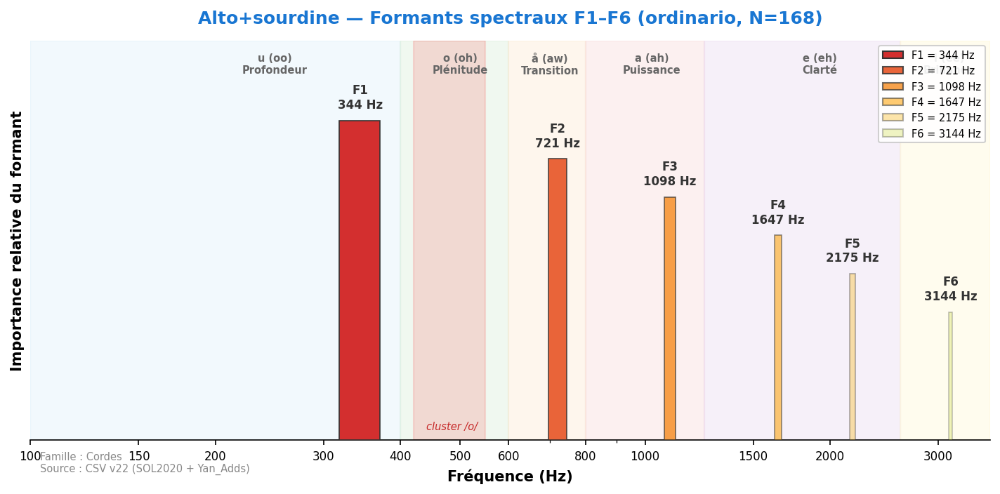
Son voilé, atténuation des partiels médiums. Timbre plus intimiste et introspectif.
Analyse spectrale complète
| non_vibrato | 156 | 334 | 711 | 1 077 | 1 604 | 2 153 | 2 972 |
| ordinario | 168 | 344 | 721 | 1 098 | 1 647 | 2 175 | 3 144 |
| tremolo | 56 | 344 | 732 | 1 098 | 1 636 | 2 196 | 3 101 |
Alto+sourd. piombo
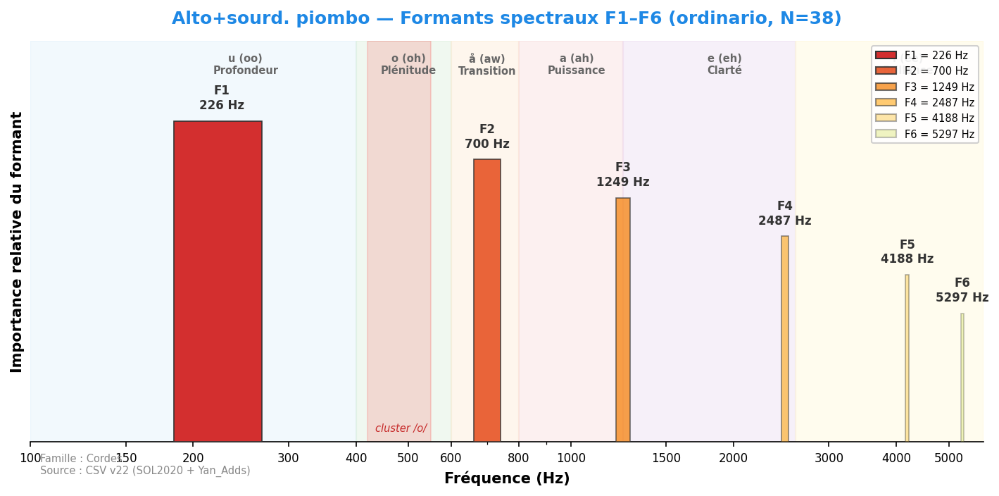
Sourdine lourde. Amortissement maximal, utilisée pour les effets timbraux extrêmes.
Analyse spectrale complète
| non_vibrato | 36 | 215 | 571 | 1 077 | 1 787 | 3 133 | 5 254 |
| ordinario | 38 | 226 | 700 | 1 249 | 2 487 | 4 188 | 5 297 |
| tremolo | 43 | 215 | 743 | 1 174 | 2 326 | 3 305 | 4 694 |
Violoncelle
Violoncelle
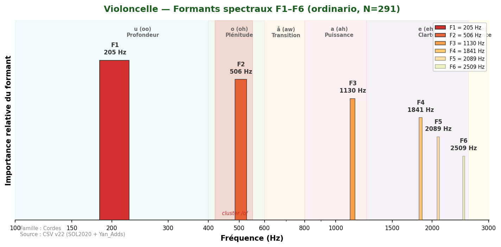
Son chaud et expressif, grande profondeur harmonique.
F1=205 Hz (zone /u/) — profondeur grave.
Accord entre sources : Giesler (300–500), Meyer (~500), Yan_Adds (499 Hz)
mesurent une zone spectrale différente (F2 ou registre aigu).
Convergences clés via F1 : Trombone (237 Hz, Δ=32 Hz), Tuba basse (226 Hz, Δ=21 Hz).
Via Fp (600 Hz) : rapprochement avec la zone /o/ du basson et du cor.
Valeurs de référence (sources académiques)
| Backus (1969) | 600–900 | — | — | — | — | — | ~ |
| Giesler (1985) | 300–500 | — | — | — | o-ähnlich | — | ✓ |
| Meyer (2009) | ~500 (Hauptformant) | — | — | — | o (oh) | — | ✓ |
| Yan_Adds (autre pipeline) | 499 ±155 | 1 304 ±576 | 2 317 | — | o (oh) | 158 | note |
| Pipeline v22 | 205 | 506 | — | — | u (oo) | 309 | réf. |
Analyse spectrale complète
| artificial_harmonic | 45 | 269 | 614 | 1 087 | 1 723 | 2 067 | 2 627 |
| artificial_harmonic_tremolo | 45 | 183 | 592 | 1 174 | 1 776 | 2 046 | 2 638 |
| behind_the_bridge | 4 | 269 | 581 | 937 | 1 260 | 1 798 | 2 412 |
| chromatic_scale | 2 | 205 | 754 | 1 087 | 1 486 | 2 035 | 2 067 |
| col_legno_battuto | 45 | 172 | 484 | 915 | 1 314 | 1 830 | 2 358 |
| col_legno_tratto | 45 | 205 | 829 | 1 141 | 1 540 | 1 981 | 2 401 |
| crescendo | 32 | 226 | 614 | 1 141 | 1 863 | 2 207 | 2 562 |
| crescendo_to_decrescendo | 39 | 205 | 528 | 1 087 | 1 798 | 2 240 | 2 670 |
| crushed_to_ordinario | 39 | 205 | 474 | 1 034 | 1 475 | 1 992 | 2 606 |
| decrescendo | 31 | 258 | 657 | 1 152 | 1 938 | 2 315 | 2 649 |
| hit_on_body | 5 | 215 | 678 | 969 | — | — | — |
| natural_harmonics_glissandi | 24 | 258 | 549 | 1 077 | 1 507 | 2 003 | 2 433 |
| non_vibrato | 279 | 194 | 495 | 1 087 | 1 529 | 2 078 | 2 476 |
| note_lasting | 35 | 205 | 538 | 1 098 | 1 540 | 2 056 | 2 552 |
| on_the_bridge | 1 | 194 | 474 | 1 130 | 1 529 | 1 841 | 2 089 |
| on_the_frog | 1 | 388 | 700 | 1 227 | 1 594 | 3 252 | 4 877 |
| on_the_tailpiece | 1 | 269 | 603 | 872 | 1 335 | 1 755 | 4 059 |
| on_the_tuning_pegs | 4 | 302 | 1 141 | 1 464 | 1 766 | 3 348 | 5 039 |
| ordinario | 291 | 205 | 506 | 1 130 | 1 841 | 2 089 | 2 509 |
| ordinario_to_crushed | 28 | 205 | 506 | 1 141 | 1 518 | 2 046 | 2 519 |
| ordinario_to_sul_ponticello | 35 | 205 | 517 | 1 077 | 1 647 | 2 110 | 2 466 |
| ordinario_to_sul_tasto | 37 | 215 | 678 | 1 400 | 1 873 | 2 229 | 2 606 |
| ordinario_to_tremolo | 32 | 215 | 484 | 1 141 | 1 755 | 2 153 | 2 562 |
| pizzicato_bartok | 45 | 237 | 538 | 1 012 | 1 410 | 1 820 | 2 638 |
| pizzicato_l_vib | 135 | 183 | 474 | 969 | 1 260 | 1 852 | 2 509 |
| pizzicato_secco | 129 | 183 | 484 | 969 | 1 270 | 1 820 | 2 143 |
| sforzato | 59 | 226 | 571 | 1 130 | 1 852 | 2 326 | 2 681 |
| staccato | 39 | 205 | 506 | 1 044 | 1 507 | 1 981 | 2 498 |
| sul_ponticello | 73 | 215 | 549 | 1 109 | 1 820 | 2 089 | 2 487 |
| sul_ponticello_to_ordinario | 35 | 205 | 538 | 1 141 | 1 766 | 2 229 | 2 692 |
| sul_ponticello_to_sul_tasto | 37 | 205 | 495 | 1 152 | 1 583 | 2 078 | 2 476 |
| sul_ponticello_tremolo | 73 | 183 | 517 | 1 163 | 1 809 | 2 078 | 2 444 |
| sul_tasto | 73 | 194 | 538 | 1 098 | 1 507 | 1 938 | 2 476 |
| sul_tasto_to_ordinario | 38 | 205 | 538 | 1 152 | 1 863 | 2 315 | 2 627 |
| sul_tasto_to_sul_ponticello | 38 | 205 | 517 | 1 098 | 1 863 | 2 304 | 2 627 |
| sul_tasto_tremolo | 73 | 205 | 506 | 937 | 1 184 | 1 852 | 2 089 |
| tremolo | 219 | 215 | 484 | 1 066 | 1 486 | 1 884 | 2 164 |
| tremolo_to_ordinario | 31 | 258 | 560 | 1 087 | 1 669 | 2 067 | 2 487 |
| trill_major_second_up | 45 | 205 | 506 | 1 044 | 1 497 | 1 960 | 2 347 |
| trill_minor_second_up | 45 | 215 | 678 | 1 109 | 1 518 | 1 960 | 2 326 |
Doublures recommandées
| Basson | 205 | 495 | Δ=290 Hz | Complémentaire | Unisson | Basson en /o/ (495 Hz), violoncelle en /u/ (205 Hz) — complémentarité classique |
| Cor | 205 | 388 | Δ=183 Hz | Bonne | Octave | Cor en /o/ (388 Hz), violoncelle en /u/ — complémentarité /u/–/o/ |
| Trombone | 205 | 237 | Δ=32 Hz | Excellente | Octave | Trombone F1=237 Hz, violoncelle F1=205 Hz — deux instruments en /u/ |
| Cor anglais | 205 | 452 | Δ=247 Hz | Complémentaire | Octave | Complémentarité /u/–/o/ |
| Tuba contrebasse | 205 | 226 | Δ=21 Hz | Quasi-parfaite | Octave | Tuba CB F1=226 Hz, violoncelle F1=205 Hz — convergence /u/ |
Violoncelle+sourdine
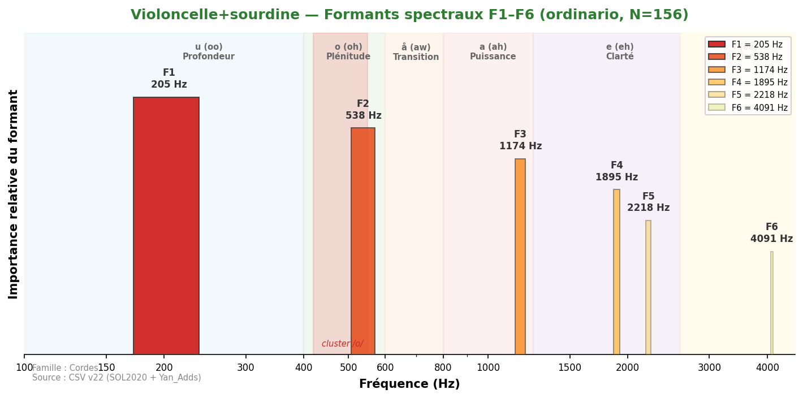
F1 légèrement modifié. Son plus mat, projection réduite. Atténuation des harmoniques aigus.
Analyse spectrale complète
| non_vibrato | 144 | 194 | 506 | 1 034 | 1 776 | 2 110 | 2 939 |
| ordinario | 156 | 205 | 538 | 1 174 | 1 895 | 2 218 | 4 091 |
| tremolo | 52 | 215 | 517 | 1 098 | 1 540 | 2 067 | 2 939 |
Violoncelle+sourd. piombo
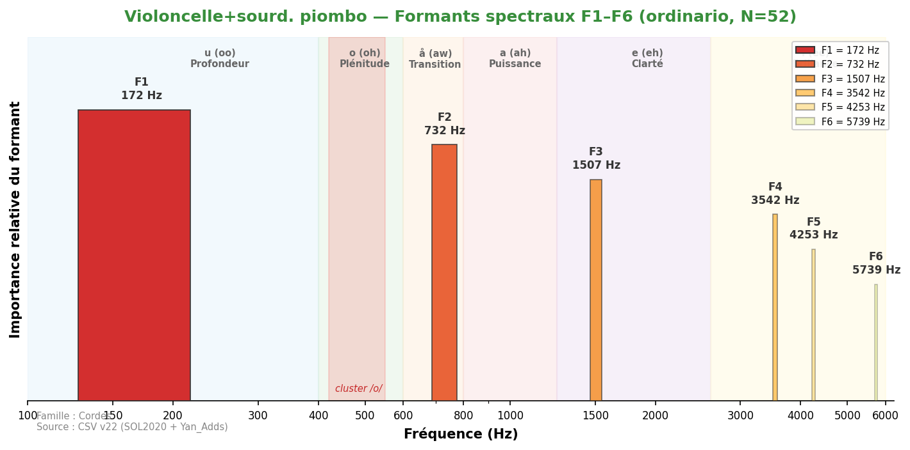
Sourdine lourde. Amortissement maximal des partiels aigus.
Analyse spectrale complète
| non_vibrato | 45 | 172 | 581 | 1 044 | 2 358 | 3 941 | 5 760 |
| ordinario | 52 | 172 | 732 | 1 507 | 3 542 | 4 253 | 5 739 |
| tremolo | 52 | 194 | 603 | 1 044 | 1 733 | 2 509 | 4 619 |
Contrebasse
Contrebasse
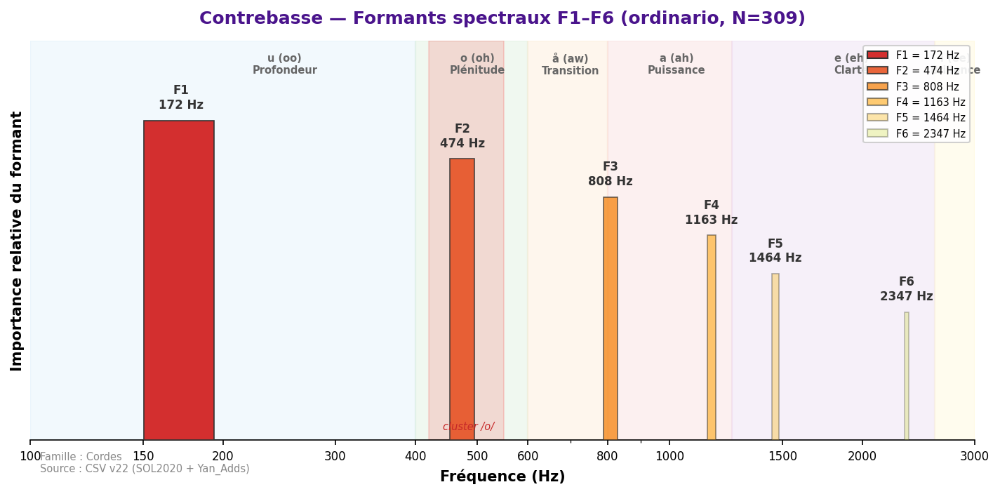
Son très grave, rôle de fondation harmonique de l'orchestre.
F1=200 Hz (zone /u/) — la résonance fondamentale de la caisse.
Giesler note une zone basse 70–250 Hz avec un formant secondaire à 400 Hz.
Grande variabilité : la contrebasse est l'instrument à cordes le moins formulable
par un F1 unique.
Valeurs de référence (sources académiques)
| Giesler (1985) | 70–250 | 400 (secondaire) | — | — | u/o | — | ~ |
| SOL2020 (autre pipeline) | 200 ±169 | 593 ±312 | 1 200 | — | u (oo) | 41 | note |
| Pipeline v22 | 172 | 474 | — | — | u (oo) | 297 | réf. |
Analyse spectrale complète
| artificial_harmonic | 49 | 183 | 538 | 948 | 1 324 | 1 755 | 2 681 |
| artificial_harmonic_tremolo | 46 | 162 | 517 | 915 | 1 303 | 1 723 | 2 541 |
| behind_the_bridge | 4 | 764 | 1 184 | 2 347 | 3 305 | 4 059 | 5 792 |
| chromatic_scale | 2 | 172 | 484 | 818 | 1 152 | 1 518 | — |
| col_legno_battuto | 55 | 140 | 474 | 1 001 | 1 389 | 1 841 | 2 229 |
| col_legno_tratto | 55 | 162 | 484 | 829 | 1 141 | 1 432 | 1 960 |
| crescendo | 36 | 183 | 506 | 980 | 1 270 | 1 540 | 2 412 |
| crescendo_to_decrescendo | 52 | 172 | 495 | 1 012 | 1 324 | 1 615 | 2 509 |
| crushed_to_ordinario | 48 | 183 | 474 | 861 | 1 206 | 1 518 | 1 895 |
| decrescendo | 36 | 183 | 495 | 872 | 1 238 | 1 540 | 2 110 |
| hit_on_body | 5 | 215 | 958 | 1 324 | 1 561 | — | — |
| natural_harmonics_glissandi | 24 | 194 | 495 | 948 | 1 378 | 1 712 | 2 649 |
| non_vibrato | 297 | 172 | 474 | 829 | 1 163 | 1 475 | 2 240 |
| note_lasting | 40 | 172 | 495 | 990 | 1 249 | 1 497 | 1 895 |
| on_the_bridge | 1 | 172 | 474 | 775 | 1 163 | 1 507 | — |
| on_the_tailpiece | 1 | 129 | 560 | 894 | 1 529 | 2 412 | — |
| on_the_tuning_pegs | 4 | 258 | 592 | 1 174 | 1 486 | 1 776 | 2 401 |
| ordinario | 309 | 172 | 474 | 808 | 1 163 | 1 464 | 2 347 |
| ordinario_to_crushed | 36 | 183 | 484 | 883 | 1 195 | 1 454 | 1 863 |
| ordinario_to_sul_ponticello | 43 | 172 | 484 | 926 | 1 238 | 1 507 | 2 089 |
| ordinario_to_sul_tasto | 46 | 172 | 484 | 840 | 1 184 | 1 486 | 1 906 |
| ordinario_to_tremolo | 36 | 183 | 484 | 958 | 1 270 | 1 583 | 2 056 |
| pizzicato_bartok | 54 | 205 | 624 | 1 001 | 1 464 | 1 906 | 2 326 |
| pizzicato_l_vib | 165 | 151 | 463 | 872 | 1 184 | 1 486 | 1 873 |
| pizzicato_secco | 165 | 151 | 463 | 851 | 1 217 | 1 518 | 2 261 |
| sforzato | 72 | 183 | 474 | 872 | 1 206 | 1 507 | 1 852 |
| staccato | 52 | 172 | 463 | 872 | 1 217 | 1 540 | 1 841 |
| sul_ponticello | 76 | 183 | 474 | 840 | 1 163 | 1 475 | 2 164 |
| sul_ponticello_to_ordinario | 40 | 183 | 506 | 915 | 1 227 | 1 529 | 2 390 |
| sul_ponticello_to_sul_tasto | 46 | 183 | 474 | 829 | 1 152 | 1 486 | 1 852 |
| sul_ponticello_tremolo | 75 | 172 | 484 | 829 | 1 141 | 1 464 | 2 024 |
| sul_tasto | 73 | 172 | 474 | 808 | 1 141 | 1 464 | 1 906 |
| sul_tasto_to_ordinario | 43 | 172 | 506 | 948 | 1 238 | 1 529 | 2 519 |
| sul_tasto_to_sul_ponticello | 43 | 172 | 495 | 894 | 1 206 | 1 507 | 2 078 |
| sul_tasto_tremolo | 75 | 172 | 463 | 797 | 1 152 | 1 464 | 2 046 |
| tremolo | 228 | 183 | 474 | 808 | 1 141 | 1 464 | 1 873 |
| tremolo_to_ordinario | 36 | 183 | 484 | 829 | 1 163 | 1 550 | 1 895 |
| trill_major_second_up | 54 | 172 | 474 | 818 | 1 141 | 1 454 | 2 282 |
| trill_minor_second_up | 54 | 172 | 474 | 818 | 1 141 | 1 464 | 1 863 |
Doublures recommandées
| Tuba basse | 172 | 226 | Δ=54 Hz | Excellente | Unisson | Fondation grave cordes-cuivres — Δ=54 Hz |
| Contrebasson | 172 | 226 | Δ=54 Hz | Excellente | Unisson | Fondation grave cordes-bois — Δ=54 Hz |
| Clarinette contrebasse | 172 | 323 | Δ=151 Hz | Bonne | Octave | Cl. contrebasse sonne une octave au-dessus |
Contrebasse+sourdine
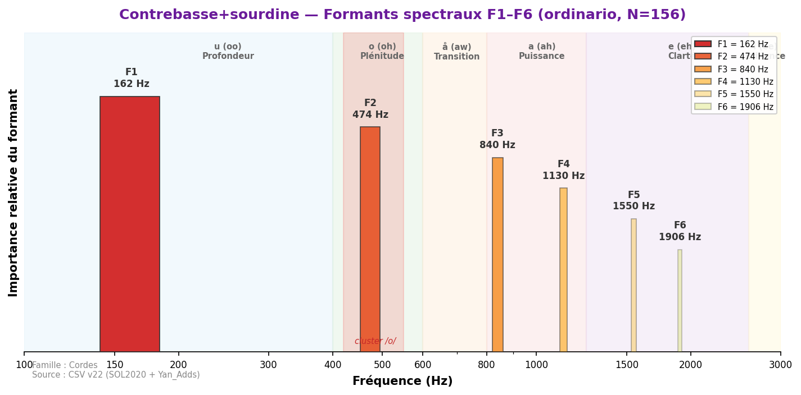
Son très étouffé. La sourdine affecte principalement les harmoniques médiums.
Analyse spectrale complète
| non_vibrato | 143 | 172 | 474 | 840 | 1 163 | 1 561 | 1 938 |
| ordinario | 156 | 162 | 474 | 840 | 1 130 | 1 550 | 1 906 |
| tremolo | 52 | 183 | 474 | 840 | 1 098 | 1 540 | 2 067 |
Cordes d'ensemble
Les données d'ensemble montrent un effet de section (compression formantique)
systématique : le F1 collectif est significativement plus haut que le F1 du soliste.
Exemple le plus marqué : Violon solo F1=506 Hz (Fp=893) → Ensemble de violons F1=1 556 Hz (+50%).
Ensemble de violonsCluster /o/
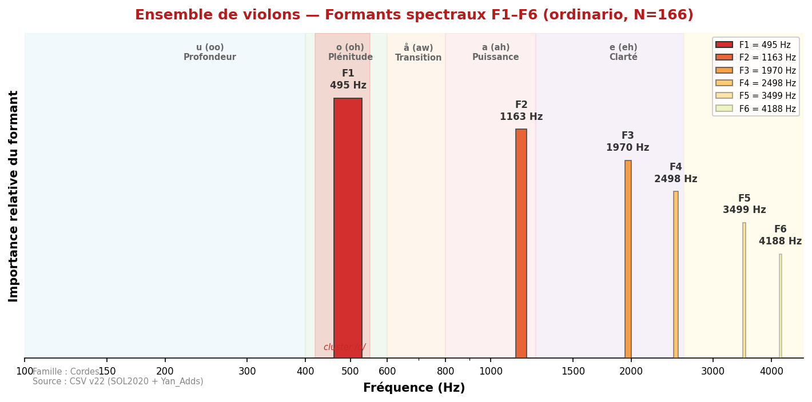
F1 ensemble = 495 Hz — quasi-identique au solo (506 Hz, Δ=−2 %).
L'effet de section ne déplace pas F1 mais lisse les harmoniques supérieurs :
F2 passe de 1 518 Hz (solo) à 1 163 Hz (ensemble, −23 %) ; F3 de 2 347 à 1 970 Hz (−16 %).
Le résultat perceptif est un timbre plus fondu et homogène — moins de relief spectral
individuel, plus de continuité collective. C'est cet aplatissement de F2–F3 qui donne
aux sections de violons leur texture caractéristique, distincte du soliste.
Valeurs de référence (sources académiques)
| SOL2020 (N=166) | 495 ±89 | 1 163 ±312 | 1 970 ±389 | — | o (oh) | 166 | — |
Analyse spectrale complète
| flautando | 21 | 484 | 883 | 1 314 | 1 895 | 2 950 | 3 973 |
| ordinario | 166 | 495 | 1 163 | 1 970 | 2 498 | 3 499 | 4 188 |
| pizzicato-l-vib | 126 | 345 | 603 | 1 087 | 1 658 | 2 293 | 3 165 |
Doublures recommandées
| Hautbois | 495 | 743 (F1) | Δ=248 Hz | Complémentaire | Unisson | F1 ens. violons proche de /o/, hautbois en /å/ — complémentarité |
| Flûte | 495 | 743 | Δ=248 Hz | Complémentaire | Unisson | Zone /o/–/å/ partagée |
| Violoncelle | 495 | 205 | Δ=290 Hz | Complémentaire | Octave | Complémentarité /o/–/u/ violons+violoncelles |
| Clarinette Sib | 495 | 463 | Δ=32 Hz | Excellente | Unisson | Convergence /o/ — fusion cordes-bois |
Ensemble de violons+sourdine
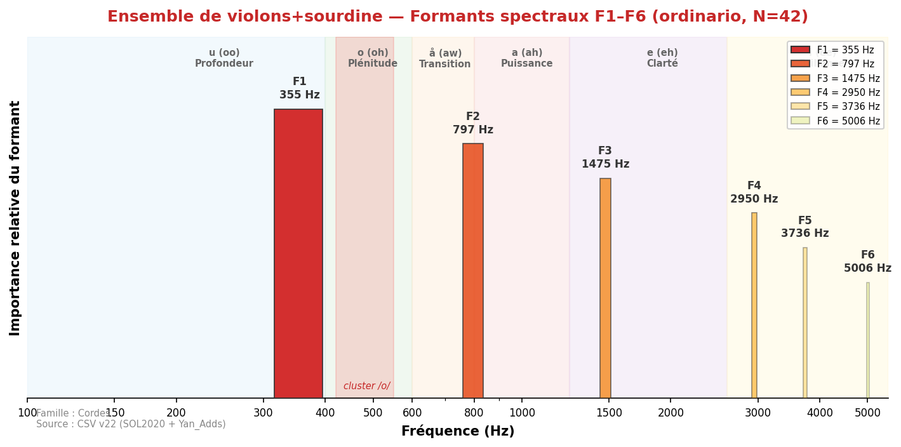
Section avec sourdines. Atténuation collective, timbre soyeux et unifié.
Ensemble de violoncelles
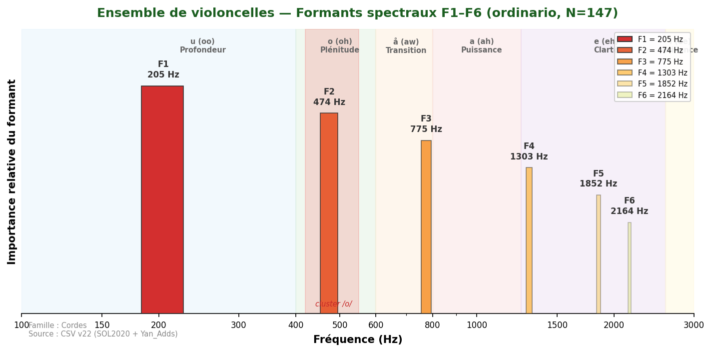
F1 ensemble = 205 Hz — identique au solo.
F2 passe de 506 Hz (solo) à 474 Hz (ensemble, −6 %). La section violoncelle maintient
intégralement la couleur /u/ du soliste, avec un léger lissage des harmoniques supérieurs.
Elle partage la zone /u/ avec le tuba basse (226 Hz) et la contrebasse (172 Hz).
Valeurs de référence (sources académiques)
| SOL2020 (N=147) | 205 ±48 | 474 ±156 | 775 ±201 | — | u (oo) | 147 | — |
Analyse spectrale complète
| flautando | 19 | 205 | 463 | 754 | 1 012 | 1 647 | 1 895 |
| ordinario | 147 | 205 | 474 | 775 | 1 303 | 1 852 | 2 164 |
| pizzicato-l-vib | 93 | 194 | 484 | 818 | 1 260 | 1 809 | 2 347 |
Doublures recommandées
| Cor anglais | 205 | 452 | Δ=247 Hz | Complémentaire | Unisson | Complémentarité /u/–/o/ — couleur grave + chaud |
| Basson | 205 | 495 | Δ=290 Hz | Complémentaire | Octave | Fondation grave + zone /o/ basson |
| Cor | 205 | 388 | Δ=183 Hz | Bonne | Octave | Zone /u/–/o/ complémentaire |
Ensemble de violoncelles+sourdine
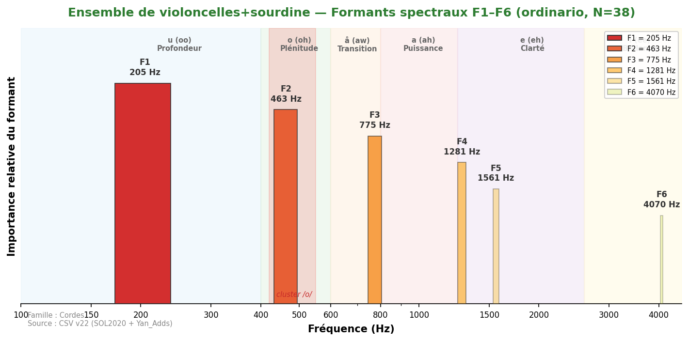
Section avec sourdines. Conservation de la couleur /o/ avec une projection réduite.
Ensemble de contrebasses
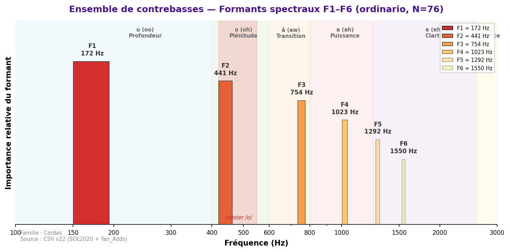
Technique non-vibrato (seule disponible dans la base).
F1=172 Hz — identique au solo. F2 passe de 474 Hz (solo) à 441 Hz (ensemble, −7 %).
La fondation grave de l'orchestre reste strictement dans la zone /u/, avec
une homogénéisation légère des harmoniques médiums en section.
⚠ Technique : non-vibrato uniquement dans la base.
Valeurs de référence (sources académiques)
| SOL2020 (non-vibrato, N=76) | 172 ±44 | 441 ±112 | 754 ±189 | — | u (oo) | 76 | — |
Analyse spectrale complète
| flautando | 18 | 172 | 452 | 947 | 1 023 | 1 324 | 1 561 |
| non-vibrato | 76 | 172 | 441 | 754 | 1 023 | 1 292 | 1 550 |
| pizzicato-l-vib | 98 | 172 | 441 | 764 | 1 034 | — | — |
Doublures recommandées
| Tuba basse | 172 | 226 | Δ=54 Hz | Excellente | Unisson | Fondation grave sections — Δ=54 Hz |
| Contrebasson | 172 | 226 | Δ=54 Hz | Excellente | Unisson | Bois + cordes graves — Δ=54 Hz |
| Tuba contrebasse | 172 | 226 | Δ=54 Hz | Excellente | Unisson | Tuba CB F1=226 Hz — convergence /u/ |
Source : formants_all_techniques.csv (SOL2020) + formants_yan_adds.csv · pipeline v22.
Références : Backus (1969) · Giesler (1985) · Meyer (2009).